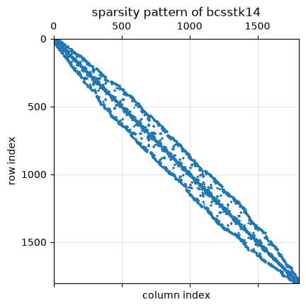
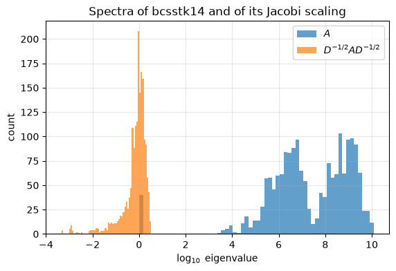
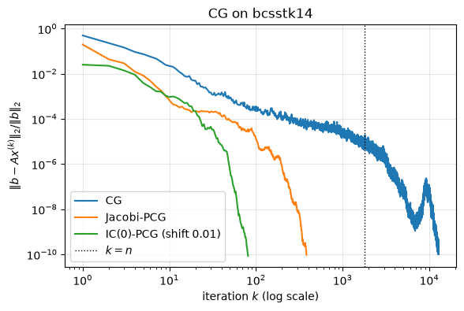

11.18. Case study: conjugate gradients on a structural stiffness matrix#
This case study accompanies Chapter 11 of the notes (Section 11.8 and Section 11.10). We solve a linear system with a real stiffness matrix from structural engineering by a sparse direct method and by the conjugate gradient method with three choices of preconditioner, and we compare what we observe with what the theory predicts.
Learning objectives. After working through this case study you should be able to
inspect a sparse matrix from an application (size, sparsity, symmetry, scaling, spectrum) and compute its 2-norm condition number;
run
scipy.sparse.linalg.cgwith a callback that records the residual history, with and without a preconditioner;build Jacobi and incomplete Cholesky preconditioners and diagnose a breakdown of incomplete Cholesky;
compare iteration counts and attained accuracy with the bounds of the chapter, and compare CG with a sparse direct solver in time and accuracy.
The data. The matrix HB/bcsstk14 comes from the SuiteSparse Matrix
Collection [Davis and Hu, 2011] (https://sparse.tamu.edu/HB/bcsstk14). Its
Matrix Market header describes it as “Stiffness matrix - roof of Omni
Coliseum, Atlanta”; it belongs to the Harwell-Boeing collection (1985, author
M. Will). It is real, symmetric and positive definite of order 1806, with
63,454 stored nonzeros (both triangles). The course copy in
data/bcsstk14.npz was read with scipy.io.mmread, converted to CSR and
saved with scipy.sparse.save_npz; no values were changed (see
data/README.md).
import time
import urllib.request
from pathlib import Path
import matplotlib.pyplot as plt
import numpy as np
import scipy
import scipy.linalg as sla
import scipy.sparse as sp
import scipy.sparse.linalg as spla
rng = np.random.default_rng(1806)
u = np.finfo(float).eps / 2 # unit roundoff, 2**-53
plt.rcParams.update({"figure.figsize": (6.4, 4.0), "axes.grid": True, "grid.alpha": 0.3})
DATA_URL = "https://raw.githubusercontent.com/aalsammani/Scientific-Computations-I-Notebooks/main/data/"
def data_file(name):
"""Return a path to data/<name>, downloading it if it is not available locally."""
local = Path("../../data") / name
if local.exists():
return local
target = Path(name)
if not target.exists():
urllib.request.urlretrieve(DATA_URL + name, target)
return target
print(f"NumPy {np.__version__}, SciPy {scipy.__version__}")
NumPy 2.5.3, SciPy 1.18.1
11.18.1. 1. A first look at the matrix#
A = sp.load_npz(data_file("bcsstk14.npz")).tocsr()
n = A.shape[0]
d = A.diagonal()
print(f"order n = {n}, stored nonzeros = {A.nnz} ({A.nnz / n:.1f} per row, "
f"density {A.nnz / n**2:.2%})")
print(f"symmetric: {abs(A - A.T).max() == 0}")
print(f"diagonal entries between {d.min():.3g} and {d.max():.3g}")
rows_nnz = np.diff(A.indptr)
decoupled = np.flatnonzero(rows_nnz == 1)
print(f"rows with a single stored entry: {decoupled.size}, with diagonal values {set(d[decoupled])}")
assert (n, A.nnz) == (1806, 63454)
fig, ax = plt.subplots(figsize=(4.5, 4.5))
ax.spy(A, markersize=0.2)
ax.set_title("sparsity pattern of bcsstk14")
ax.set_xlabel("column index")
ax.set_ylabel("row index")
plt.show()
order n = 1806, stored nonzeros = 63454 (35.1 per row, density 1.95%)
symmetric: True
diagonal entries between 1 and 8.94e+09
rows with a single stored entry: 40, with diagonal values {np.float64(1.0)}

Two features stand out. The nonzeros lie in a band around the diagonal, as is typical of finite element matrices with a reasonable node numbering. And the diagonal entries range over ten orders of magnitude: most are between \(10^6\) and \(10^{10}\), but 40 rows contain nothing except a \(1\) on the diagonal. These 40 unknowns are decoupled from the rest of the system; the equations simply say \(x_i = b_i\). (A common reason for such rows in stiffness matrices is that the corresponding degrees of freedom are constrained by the boundary conditions, but the file does not record why they are there.)
11.18.2. 2. The condition number#
Because \(n = 1806\) is small, we can afford the dense symmetric eigensolver
(Chapter 10), which costs \(\mathcal{O}(n^3)\) flops. Its
eigenvalues have absolute errors of order \(u\|A\|_2\), which here is about
\(10^{-6}\), so the smallest eigenvalue is known only to about six digits from
this computation. We confirm the extreme eigenvalues with ARPACK through
eigsh: the largest with the Lanczos method, the smallest with shift-invert
about \(\sigma = 0\), which factors \(A\) once and applies Lanczos to \(A^{-1}\).
t0 = time.perf_counter()
w = np.linalg.eigvalsh(A.toarray())
t_eig = time.perf_counter() - t0
lam_max = spla.eigsh(A, k=1, which="LA", return_eigenvectors=False)[0]
lam_min = spla.eigsh(A, k=1, sigma=0.0, which="LM", return_eigenvectors=False)[0]
kappa = lam_max / lam_min
print(f"dense eigvalsh ({t_eig:.1f} s): lambda_min = {w[0]:.7f}, lambda_max = {w[-1]:.6e}")
print(f"eigsh: lambda_min = {lam_min:.7f}, lambda_max = {lam_max:.6e}")
print(f"kappa_2(A) = {kappa:.4e}")
# Dense eigenvalues are accurate to O(n u ||A||_2) in absolute terms.
assert abs(w[0] - lam_min) < n * u * lam_max and abs(w[-1] - lam_max) < n * u * lam_max
dense eigvalsh (0.3 s): lambda_min = 0.9999983, lambda_max = 1.192322e+10
eigsh: lambda_min = 1.0000000, lambda_max = 1.192322e+10
kappa_2(A) = 1.1923e+10
The 2-norm condition number is \(\kappa_2(A) = \lambda_{\max}/\lambda_{\min}
\approx 1.19\times10^{10}\), in agreement with the value “about \(1.2\times10^{10}\)”
quoted in data/README.md. The smallest eigenvalue is exactly \(1\): the 40
decoupled rows are unit vectors, so \(Ae_i = e_i\) for those \(i\). The large
condition number is therefore partly a matter of scaling. The spectrum of
the coupled part and of the symmetrically scaled matrix
\(D^{-1/2}AD^{-1/2}\), \(D = \operatorname{diag}(A)\), tell a more useful story.
keep = np.setdiff1d(np.arange(n), decoupled)
w_coupled = np.linalg.eigvalsh(A[keep][:, keep].toarray())
kappa_coupled = w_coupled[-1] / w_coupled[0]
Dh = sp.diags(1 / np.sqrt(d))
w_scaled = np.linalg.eigvalsh((Dh @ A @ Dh).toarray())
kappa_scaled = w_scaled[-1] / w_scaled[0]
print(f"eigenvalues equal to 1 (to 6 digits): {np.sum(np.abs(w - 1) < 1e-5)}")
print(f"coupled part ({keep.size} unknowns): lambda_min = {w_coupled[0]:.1f}, kappa = {kappa_coupled:.3e}")
print(f"Jacobi-scaled matrix D^-1/2 A D^-1/2: kappa = {kappa_scaled:.1f}")
fig, ax = plt.subplots()
ax.hist(np.log10(w), bins=60, alpha=0.7, label="$A$")
ax.hist(np.log10(w_scaled), bins=60, alpha=0.7, label=r"$D^{-1/2}AD^{-1/2}$")
ax.set_xlabel(r"$\log_{10}$ eigenvalue")
ax.set_ylabel("count")
ax.set_title("Spectra of bcsstk14 and of its Jacobi scaling")
ax.legend()
plt.show()
eigenvalues equal to 1 (to 6 digits): 40
coupled part (1766 unknowns): lambda_min = 3286.6, kappa = 3.628e+06
Jacobi-scaled matrix D^-1/2 A D^-1/2: kappa = 7236.2

The eigenvalues of \(A\) spread over ten decades, with an isolated group of 40 eigenvalues at \(1\). Symmetric diagonal scaling compresses the spectrum to fewer than four decades: \(\kappa\) drops by more than six orders of magnitude. By Proposition 11.1 in the notes, this is exactly the condition number that governs CG with the Jacobi preconditioner.
11.18.3. 3. The test problem and the sparse direct solution#
We take the exact solution \(x_\star = (1,\dots,1)^T\) and \(b = Ax_\star\). The vector \(b\) is computed in floating point, so \(x_\star\) is the exact solution of a system whose right-hand side differs from the stored \(b\) by rounding errors; by the perturbation theory of Chapter 4 this can change the solution by up to about \(\kappa_2(A)\,u\) in relative terms, which here is about \(10^{-6}\). That is the accuracy to which the question “what is the exact solution?” is even meaningful.
The sparse direct solver splu (SuperLU) computes \(P_rAP_c = LU\) with a
fill-reducing column ordering. For an SPD matrix we can ask it to preserve
symmetry of the ordering and not to pivot, which is then equivalent to a
Cholesky factorization with a symmetric ordering.
b = A @ np.ones(n)
x_star = np.ones(n)
normA2 = lam_max # ||A||_2 for SPD A
def report(x, label):
r = b - A @ x
relres = np.linalg.norm(r) / np.linalg.norm(b)
eta = np.linalg.norm(r) / (normA2 * np.linalg.norm(x) + np.linalg.norm(b))
relerr = np.linalg.norm(x - x_star) / np.linalg.norm(x_star)
print(f"{label:22s} relative residual {relres:.1e}, backward error {eta:.1e}, relative error {relerr:.1e}")
return relres, eta, relerr
for spec in ("NATURAL", "COLAMD", "MMD_AT_PLUS_A"):
lu = spla.splu(A.tocsc(), permc_spec=spec, diag_pivot_thresh=0.0, options=dict(SymmetricMode=True))
print(f"ordering {spec:14s}: nnz(L) + nnz(U) = {lu.L.nnz + lu.U.nnz:7d}")
lu = spla.splu(A.tocsc(), permc_spec="MMD_AT_PLUS_A", diag_pivot_thresh=0.0, options=dict(SymmetricMode=True))
x_direct = lu.solve(b)
direct = report(x_direct, "splu (minimum degree)")
# A backward stable solver gives backward error O(u) and forward error O(kappa u).
assert direct[1] < 100 * u and direct[2] < kappa * 100 * u
ordering NATURAL : nnz(L) + nnz(U) = 381582
ordering COLAMD : nnz(L) + nnz(U) = 365574
ordering MMD_AT_PLUS_A : nnz(L) + nnz(U) = 224534
splu (minimum degree) relative residual 3.5e-16, backward error 5.2e-17, relative error 4.9e-14
The direct solver is backward stable: the backward error is of the order of \(u\). The forward error is far smaller than the worst-case estimate \(\kappa_2(A)u\approx10^{-6}\). The ordering matters for the fill: the minimum degree ordering of \(A + A^T\) keeps the factors much sparser than the natural order, which here is already banded.
11.18.4. 4. Unpreconditioned CG#
scipy.sparse.linalg.cg stops when the recursively updated residual
satisfies \(\|r^{(k)}\|_2\le\max(\mathtt{rtol}\,\|b\|_2, \mathtt{atol})\). It
calls callback(xk) after every iteration; we use the callback to record the
true residual \(b - Ax^{(k)}\) and the \(A\)-norm of the error
\(\|x^{(k)} - x_\star\|_A\). (Computing these costs an extra matrix-vector
product per iteration, which we accept for the purpose of the experiment.)
def run_cg(M=None, rtol=1e-10, maxiter=20 * n):
hist = {"relres": [], "errA": []}
normb = np.linalg.norm(b)
e0A = np.sqrt(x_star @ (A @ x_star)) # x0 = 0
def callback(xk):
hist["relres"].append(np.linalg.norm(b - A @ xk) / normb)
e = xk - x_star
hist["errA"].append(np.sqrt(e @ (A @ e)) / e0A)
x, info = spla.cg(A, b, rtol=rtol, atol=0.0, maxiter=maxiter, M=M, callback=callback)
return x, info, {k: np.array(v) for k, v in hist.items()}
x_cg, info, hist_cg = run_cg()
print(f"info = {info}, iterations = {hist_cg['relres'].size} (n = {n})")
res_cg = report(x_cg, "CG")
info = 0, iterations = 12773 (n = 1806)
CG relative residual 1.0e-10, backward error 1.5e-11, relative error 2.6e-06
In exact arithmetic CG terminates in at most as many steps as \(A\) has distinct eigenvalues, so in at most \(n = 1806\) steps (Theorem 11.6). In floating point it needed about seven times as many. This is the delayed convergence caused by the loss of orthogonality of the residuals discussed in Section 11.8 [Greenbaum, 1997, Meurant and Strakoš, 2006]: the method keeps converging, but finite termination is lost.
What does the Chebyshev bound (11.11) predict? To reduce \(\|e^{(k)}\|_A\) by a factor \(\epsilon\) it guarantees success after \(k\approx\tfrac12\sqrt{\kappa}\ln(2/\epsilon)\) iterations.
def bound_iterations(kap, eps):
q = (np.sqrt(kap) - 1) / (np.sqrt(kap) + 1)
return np.log(eps / 2) / np.log(q)
def first_below(errA, eps):
"""First iteration k with ||e_k||_A / ||e_0||_A <= eps (None if never)."""
hits = np.flatnonzero(errA <= eps)
return int(hits[0]) + 1 if hits.size else None
eps = 1e-8
print(f"final ||e_k||_A / ||e_0||_A = {hist_cg['errA'][-1]:.1e}")
print(f"first iteration with ||e_k||_A / ||e_0||_A <= {eps:.0e}: {first_below(hist_cg['errA'], eps)}")
print(f"bound with kappa(A) = {kappa:.2e}: {bound_iterations(kappa, eps):9.0f} iterations")
print(f"bound with kappa of the coupled part = {kappa_coupled:.2e}: {bound_iterations(kappa_coupled, eps):6.0f} iterations")
final ||e_k||_A / ||e_0||_A = 7.0e-09
first iteration with ||e_k||_A / ||e_0||_A <= 1e-08: 12439
bound with kappa(A) = 1.19e+10: 1043553 iterations
bound with kappa of the coupled part = 3.63e+06: 18203 iterations
We measure the \(A\)-norm error reduction \(\epsilon = 10^{-8}\), which all our runs attain before they stop. With \(\kappa_2(A)\) the bound is useless here: it guarantees this reduction only after about a million iterations. It depends only on the extreme eigenvalues, and the smallest one belongs to the 40 decoupled unknowns, which CG handles easily. The condition number of the coupled part gives a more realistic estimate, but the observed count is lower still, because the eigenvalues are not distributed like the Chebyshev worst case. (The bound is also an exact-arithmetic statement, so the comparison with a finite-precision run is only indicative.)
11.18.5. 5. Jacobi preconditioning#
The Jacobi preconditioner is \(M = D = \operatorname{diag}(A)\). SciPy expects
M to apply \(M^{-1}\), which we pass as a LinearOperator. By
Proposition 11.1, preconditioned CG behaves like CG applied to
\(D^{-1/2}AD^{-1/2}\), whose condition number we computed above.
M_jacobi = spla.LinearOperator(A.shape, matvec=lambda r: r / d, dtype=float)
x_jac, info, hist_jac = run_cg(M_jacobi)
print(f"info = {info}, iterations = {hist_jac['relres'].size}")
res_jac = report(x_jac, "Jacobi-PCG")
print(f"first iteration with ||e_k||_A / ||e_0||_A <= {eps:.0e}: {first_below(hist_jac['errA'], eps)}; "
f"bound with kappa(D^-1/2 A D^-1/2) = {kappa_scaled:.0f}: {bound_iterations(kappa_scaled, eps):.0f}")
info = 0, iterations = 382
Jacobi-PCG relative residual 9.5e-11, backward error 1.4e-11, relative error 1.8e-07
first iteration with ||e_k||_A / ||e_0||_A <= 1e-08: 338; bound with kappa(D^-1/2 A D^-1/2) = 7236: 813
11.18.6. 6. Incomplete Cholesky preconditioning#
The zero-fill incomplete Cholesky factorization IC(0) computes a lower triangular \(L\) with the sparsity pattern of the lower triangle of \(A\) such that \(LL^T\) agrees with \(A\) on that pattern (the same function as in the lab). For a general SPD matrix IC(0) can break down with a nonpositive pivot [Benzi, 2002]. A standard remedy is to factor \(A + \alpha\operatorname{diag}(A)\) for a small shift \(\alpha>0\) instead.
def ic0(A, shift=0.0):
"""IC(0) of a sparse symmetric matrix. Returns L (CSR, lower triangular).
Raises LinAlgError if a nonpositive pivot occurs."""
Low = sp.tril(sp.csr_array(A), format="csr")
Low.sort_indices()
n = Low.shape[0]
rows = [] # rows[i] = {j: l_ij} for j <= i
for i in range(n):
cols = Low.indices[Low.indptr[i]:Low.indptr[i + 1]]
vals = Low.data[Low.indptr[i]:Low.indptr[i + 1]]
Li = {}
for j, a_ij in zip(cols, vals):
Lj = rows[j] if j < i else Li
small, big = (Li, Lj) if len(Li) <= len(Lj) else (Lj, Li)
s = sum(v * big[k] for k, v in small.items() if k < j and k in big)
if j < i:
Li[j] = (a_ij - s) / rows[j][j]
else:
piv = a_ij * (1 + shift) - s
if piv <= 0:
raise np.linalg.LinAlgError(f"IC(0) breakdown: pivot {piv:.3e} at row {i}")
Li[i] = np.sqrt(piv)
rows.append(Li)
r = np.repeat(np.arange(n), [len(Li) for Li in rows])
c = np.fromiter((j for Li in rows for j in Li), dtype=np.int64, count=len(r))
v = np.fromiter((x for Li in rows for x in Li.values()), dtype=float, count=len(r))
return sp.csr_array((v, (r, c)), shape=(n, n))
for alpha in (0.0, 1e-3, 1e-2):
try:
t0 = time.perf_counter()
L = ic0(A, shift=alpha)
t_ic = time.perf_counter() - t0
print(f"shift alpha = {alpha:g}: IC(0) succeeded in {t_ic:.2f} s, nnz(L) = {L.nnz}")
break
except np.linalg.LinAlgError as err:
print(f"shift alpha = {alpha:g}: {err}")
shift alpha = 0: IC(0) breakdown: pivot -2.001e+04 at row 594
shift alpha = 0.001: IC(0) breakdown: pivot -2.127e+06 at row 767
shift alpha = 0.01: IC(0) succeeded in 0.09 s, nnz(L) = 32630
IC(0) breaks down without a shift and with \(\alpha = 10^{-3}\), and succeeds with \(\alpha = 10^{-2}\). The factor has exactly as many nonzeros as the lower triangle of \(A\). We apply \(M^{-1} = L^{-T}L^{-1}\) by two sparse triangular solves and compute the condition number of the preconditioned matrix \(L^{-1}AL^{-T}\) densely (affordable at this size).
Lt = L.T.tocsr()
M_ic = spla.LinearOperator(
A.shape, matvec=lambda r: spla.spsolve_triangular(Lt, spla.spsolve_triangular(L, r, lower=True), lower=False),
dtype=float)
Ld = L.toarray()
P = sla.solve_triangular(Ld, sla.solve_triangular(Ld, A.toarray(), lower=True).T, lower=True)
w_ic = np.linalg.eigvalsh((P + P.T) / 2)
kappa_ic = w_ic[-1] / w_ic[0]
print(f"kappa(L^-1 A L^-T) = {kappa_ic:.1f}")
x_ic, info, hist_ic = run_cg(M_ic)
print(f"info = {info}, iterations = {hist_ic['relres'].size}")
res_ic = report(x_ic, "IC(0)-PCG")
print(f"first iteration with ||e_k||_A / ||e_0||_A <= {eps:.0e}: {first_below(hist_ic['errA'], eps)}; "
f"bound with kappa(L^-1 A L^-T): {bound_iterations(kappa_ic, eps):.0f}")
kappa(L^-1 A L^-T) = 1163.0
info = 0, iterations = 81
IC(0)-PCG relative residual 8.5e-11, backward error 1.3e-11, relative error 9.6e-08
first iteration with ||e_k||_A / ||e_0||_A <= 1e-08: 73; bound with kappa(L^-1 A L^-T): 326
11.18.7. 7. Residual histories#
fig, ax = plt.subplots()
for hist, label in ((hist_cg, "CG"), (hist_jac, "Jacobi-PCG"), (hist_ic, "IC(0)-PCG (shift 0.01)")):
ax.semilogy(np.arange(1, hist["relres"].size + 1), hist["relres"], label=label)
ax.axvline(n, color="k", ls=":", lw=1, label="$k = n$")
ax.set_xscale("log")
ax.set_xlabel("iteration $k$ (log scale)")
ax.set_ylabel(r"$\|b - Ax^{(k)}\|_2 / \|b\|_2$")
ax.set_title("CG on bcsstk14")
ax.legend()
plt.show()

Unpreconditioned CG decreases the residual slowly and erratically, typical of a very wide spectrum in finite precision. Jacobi scaling removes the scaling problem and reduces the iteration count by a factor of about 30; IC(0) cuts it by a further factor of about 5. In every case the observed number of iterations is below the Chebyshev estimate based on the relevant condition number.
11.18.8. 8. Attained accuracy versus the condition number#
Proposition 11.2 gives \(\|x - x^{(k)}\|_2/\|x\|_2\le\kappa_2(A)\,\|r^{(k)}\|_2/\|b\|_2\). We compare the attained relative errors with this bound.
print(f"{'method':12s} {'rel. residual':>14s} {'rel. error':>11s} {'kappa * rel. res.':>18s}")
for label, (relres, eta, relerr) in (("splu", direct), ("CG", res_cg), ("Jacobi-PCG", res_jac),
("IC(0)-PCG", res_ic)):
print(f"{label:12s} {relres:14.1e} {relerr:11.1e} {kappa * relres:18.1e}")
assert relerr <= kappa * relres # the bound always holds
method rel. residual rel. error kappa * rel. res.
splu 3.5e-16 4.9e-14 4.1e-06
CG 1.0e-10 2.6e-06 1.2e+00
Jacobi-PCG 9.5e-11 1.8e-07 1.1e+00
IC(0)-PCG 8.5e-11 9.6e-08 1.0e+00
All four solutions have relative errors far below \(\kappa_2(A)\) times their relative residuals, so the bound, although valid, is very pessimistic for this right-hand side. The CG runs stop at a relative residual of \(10^{-10}\) and attain relative errors of order \(10^{-7}\) to \(10^{-6}\); the direct solver reaches a residual at the level of \(u\). With \(\kappa_2(A)\approx10^{10}\), a residual test of \(10^{-10}\) does not by itself certify even one correct digit, so in an application the tolerance must be chosen with the conditioning of the problem (and the accuracy of the data) in mind.
11.18.9. 9. Timing (one machine)#
We time each solver as a whole, including the construction of the preconditioner or factorization, and report medians of repeats. These are observations on the machine that executed this notebook, not properties of the methods. The IC(0) factorization is written in pure Python and is therefore slow; a compiled implementation would be much faster.
def median_time(f, repeats=5):
ts = []
for _ in range(repeats):
t0 = time.perf_counter()
f()
ts.append(time.perf_counter() - t0)
return float(np.median(ts))
def solve_direct():
spla.splu(A.tocsc(), permc_spec="MMD_AT_PLUS_A", diag_pivot_thresh=0.0,
options=dict(SymmetricMode=True)).solve(b)
t_direct = median_time(solve_direct)
t_cg = median_time(lambda: spla.cg(A, b, rtol=1e-10, atol=0.0, maxiter=20 * n), repeats=3)
t_jac = median_time(lambda: spla.cg(A, b, rtol=1e-10, atol=0.0, maxiter=20 * n, M=M_jacobi))
t_ic_setup = median_time(lambda: ic0(A, shift=0.01), repeats=3)
t_ic_solve = median_time(lambda: spla.cg(A, b, rtol=1e-10, atol=0.0, maxiter=20 * n, M=M_ic))
print(f"splu (factor + solve): {t_direct * 1e3:8.1f} ms")
print(f"CG: {t_cg * 1e3:8.1f} ms")
print(f"Jacobi-PCG: {t_jac * 1e3:8.1f} ms")
print(f"IC(0) setup (pure Python): {t_ic_setup * 1e3:8.1f} ms; IC(0)-PCG solve: {t_ic_solve * 1e3:.1f} ms")
splu (factor + solve): 7.4 ms
CG: 667.2 ms
Jacobi-PCG: 20.7 ms
IC(0) setup (pure Python): 88.8 ms; IC(0)-PCG solve: 123.0 ms
For a matrix of this size the sparse direct solver is fast and far more accurate, and it is the method of choice. Iterative methods become competitive when the factors no longer fit in memory or take too long to compute, typically for three-dimensional problems with millions of unknowns, and when a good preconditioner is available.
11.18.10. 10. A note on spilu as a preconditioner for CG#
SciPy’s spilu computes an incomplete LU factorization with threshold
dropping and row pivoting. Its factors are not symmetric in general, so the
preconditioner is not symmetric positive definite and the theory of PCG does
not apply. It may work well, or the iteration may stagnate.
for drop_tol in (1e-3, 1e-4):
ilu = spla.spilu(A.tocsc(), drop_tol=drop_tol, fill_factor=10)
M_ilu = spla.LinearOperator(A.shape, matvec=ilu.solve, dtype=float)
its = []
x_ilu, info = spla.cg(A, b, rtol=1e-10, atol=0.0, maxiter=2000, M=M_ilu,
callback=lambda xk: its.append(1))
print(f"drop_tol = {drop_tol:.0e}: nnz(L+U) = {ilu.L.nnz + ilu.U.nnz}, info = {info}, "
f"iterations = {len(its)}, relative error {np.linalg.norm(x_ilu - x_star) / np.linalg.norm(x_star):.1e}")
drop_tol = 1e-03: nnz(L+U) = 220141, info = 2000, iterations = 2000, relative error 1.4e-01
drop_tol = 1e-04: nnz(L+U) = 309579, info = 0, iterations = 8, relative error 2.4e-08
With the smaller drop tolerance the “incomplete” factors hold more nonzeros
than the complete sparse factorization with the minimum degree ordering of
Section 3, and CG converges in a handful of iterations; with the larger one it fails to converge within 2000
iterations. For symmetric positive definite problems a symmetric
preconditioner (such as IC) is the safe choice; spilu is appropriate for
GMRES and BiCGSTAB, as in the lab.
11.18.11. Conclusions#
The condition number \(\kappa_2(A)\approx1.19\times10^{10}\) of bcsstk14 is dominated by scaling: 40 decoupled unknowns have eigenvalue 1, while the other diagonal entries are as large as \(9\times10^9\).
Unpreconditioned CG converges, but only after roughly \(7n\) iterations, a striking illustration of delayed convergence in finite precision.
Jacobi and IC(0) preconditioning reduce the effective condition number to about \(7\times10^3\) and \(10^3\) and the iteration count to a few hundred and under one hundred; IC(0) needed a diagonal shift to exist.
The Chebyshev bound, evaluated with the relevant condition number, is an upper estimate of the iteration count and is pessimistic in every case.
A residual tolerance does not certify the error when \(\kappa\) is large; the error bound \(\kappa\|r\|/\|b\|\) holds but overestimates here.
11.18.12. Your turn#
Remove the 40 decoupled unknowns and run unpreconditioned CG on the coupled part. How many iterations does it need, and how does that compare with the run above and with the bound for \(\kappa\) of the coupled part?
Implement the symmetric Gauss-Seidel (SSOR with \(\omega = 1\)) preconditioner \(M = (D+L)D^{-1}(D+L)^T\) and compare it with Jacobi and IC(0).
Replace \(b\) by a random vector. Do the iteration counts change? Does the relative error still sit far below \(\kappa\|r\|/\|b\|\)?
Run the unpreconditioned CG of Section 4 with a callback that also records the recursively updated residual (write your own CG, as in the lab) and compare it with the true residual. When do they separate?
11.18.13. Further reading#
Davis and Hu [2011] describe the SuiteSparse (formerly University of Florida) collection. Incomplete factorizations and their breakdown are surveyed by Benzi [2002]; Saad [2003] (Chapter 10) gives the algorithms. The finite precision behavior of CG is analyzed by Meurant and Strakoš [2006] and Greenbaum [1997] (Chapter 4). Sparse direct methods and orderings are the subject of Davis [2006].